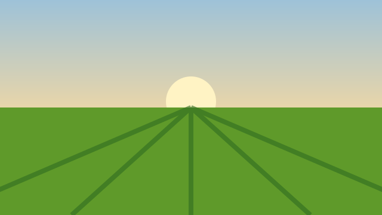

Ao lado de quem planta
O cuidado com a terra
começa todo dia.
Do primeiro plantio às anotações da lavoura, um lugar para organizar o cultivo e acompanhar o que acontece no campo.
Agricultura familiar. Informação por perto.
Na rotina da lavoura
Por onde você quer começar?
Conheça o projeto
A ideia por trás do AgroTech
Por que criamos o AgroTech e como queremos apoiar quem produz? Conheça a proposta e os próximos passos do projeto.

O vídeo de apresentação será disponibilizado aqui.
Quem produz alimento
precisa de apoio por perto.
O AgroTech é um projeto de apoio à agricultura familiar. A proposta é reunir informações do cultivo em um lugar simples de usar, para ajudar na organização do trabalho no campo.
Fale com a gente